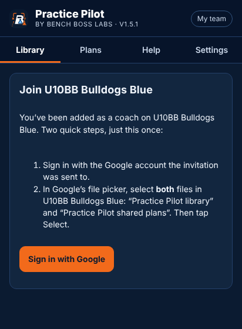
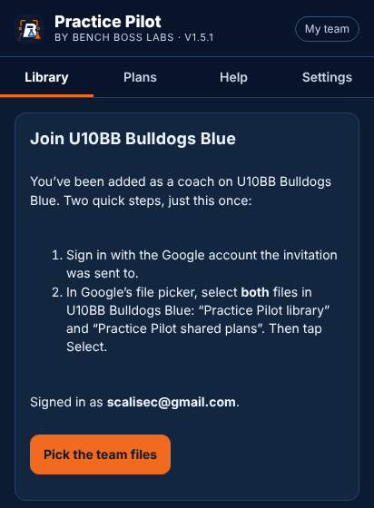
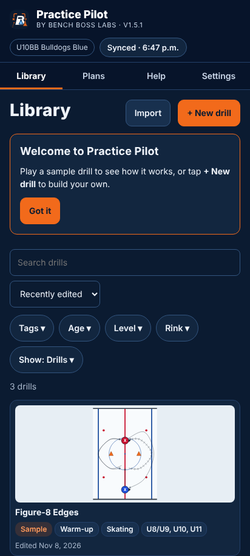
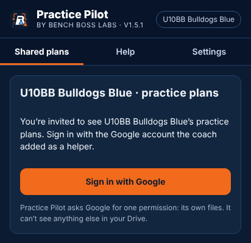
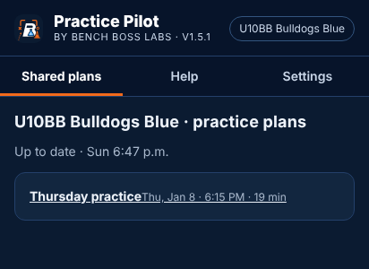
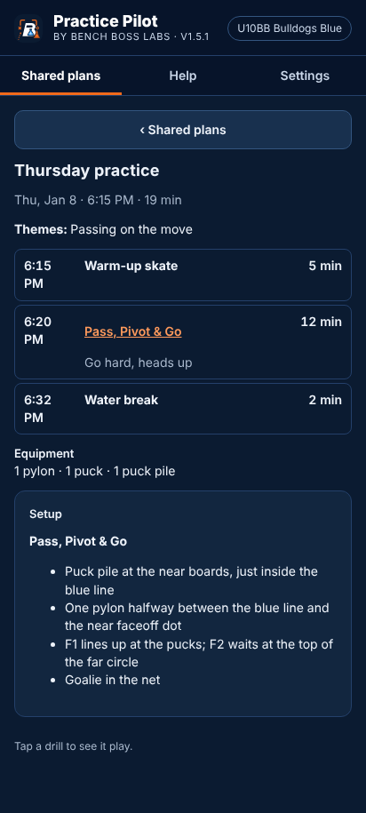

1Getting started
Open and install the app
Practice Pilot runs in the browser and installs like an app. Installed, it opens full screen and works with no signal.
- Android phone or tablet (Chrome): open the address, tap the ⋮ menu, then Add to Home screen (or Install app).
- iPad or iPhone (Safari): tap the Share button, then Add to Home Screen.
- Computer (Chrome or Edge): click the install icon at the right of the address bar.
- The steps for your device are also in Settings › This device › Install, and the Install button at the top when your browser offers it.
Open it once while online; after that it opens without internet.
Sign in with Google
Your team's drills and plans live in a Google Drive folder that Bench Boss Labs shares with you. Practice Pilot asks Google for one permission only: its own files in your Drive. It can't see anything else there.
- Sign in from the link in your invitation email, or in Settings › This device › Sign in with Google.
- Use the Google account the invitation was sent to.
- If Google shows “Google hasn’t verified this app”, tap Continue. Practice Pilot is still in Google’s testing stage.
Join your team
When you are added as a coach, Google Drive emails you that a team folder was shared with you. The message in the email holds a link to Practice Pilot.
- Open the link on the phone or tablet you’ll use (in Chrome on Android).
- Tap Sign in with Google.
- Tap Pick the team files. In Google’s file picker, select both files in your team’s folder — “Practice Pilot library · team” and “Practice Pilot shared plans · team” — then tap Select.
- If this device already has drills of its own, you’re asked whether to move them into the team library or leave them on this device as drafts.
Without the link: Settings › This device › Join a team opens the same picker. Picking is needed once per device: Google only lets the app open files you pick.
Your team’s name (and logo) shows in the top bar. Next to it, the sync status shows when the app last caught up.



Using it on several devices
Sign in and join on each device. Published drills and plans arrive on all of them; drafts stay on the device where you made them until you publish.
2The Library
The Library lists every drill on this device: your team’s published drills, your drafts, and the sample drills.
- Watch a drill: tap its card. The preview plays it; use ▶, ‹ › to step, the slider to scrub, and the speed button (1×). ⤢ Expand makes the preview bigger; drag the bar between the cards and the preview to resize it.
- Search: type in Search drills (title, tags, notes and coaching points are searched).
- Filters: Tags, Age (U8/U9, U10, U11, U12, U13, U14+), Level, Rink (full, half, zone, neutral).
- Show: Drills (the default), My drafts, Club library, Templates, Samples only, Recently deleted.
- Sort: Recently edited, A to Z, Most steps.
- New drill: + New drill (starts blank or from one of your templates).
- Import: brings in a drill file another coach sent you (see section 11).
Drill actions (in the preview)
- Edit opens the editor. Add to plan adds it to the end of a recent plan or a new one.
- Duplicate makes a copy to change. Share sends it (section 11).
- ⋮ › Save as template (a starting point for new drills) or Delete.
- Publish / Publish changes / Discard changes appear when the drill has work your team hasn’t seen (section 10).
- Deleted drills stay in Show › Recently deleted for 30 days: Restore or Delete forever.
Badges on a card: Draft (only on this device), Unpublished changes, Sample, Template, Club.
3Building a drill
A drill is a Setup (where everything starts) and steps. In each step, things move together from where they were to where they go. Every change saves by itself; Undo and Redo are at the top.
Place pieces
- The tray holds players — F (forward), C (centre), D (defence), G (goalie), X (player) — plus Coach, Puck, Puck pile, Pylon, Net, Passer board, Deker, Tire, Stick and Text label.
- Tap a piece in the tray, then tap the rink to place it. Pick a team colour (red, black, white, blue) for new players first; new players start in your team’s colour.
- Drag a piece to move it. Tap it to select it and see its settings in the Piece tab.
Add steps and move players
- Tap + Step (or pick a step in the step bar under the rink).
- Drag players, coaches and pucks to where they go in that step. Everything in a step moves at the same time.
- A player who has the puck on their stick carries it with them.
- Skate a route: drag a player along the path you want (loops, curves, around pylons). They follow your finger at an even speed over the step. Drag them again to keep going; Undo or Stay still starts over.
- Change a path: tap a moving piece and drag the dots on its line. Path buttons add or remove bends.
- Line style: skate, skate with the puck, or skate backward (the Line choice in the Piece tab).
- Finish: Stop or Pivot at the end of a move.
- Timing: When — with the step, or After skaters arrive (a pass waits for the skater).
- Appears in / Leaves after: a piece can join the drill partway through and leave before the end.
- The Step tab lists what moves in the step and holds its Caption (shown when the drill plays and on printouts).
Remove or copy
Select a piece: Duplicate or Remove from drill. Eraser removes drawings.
4Passing, shooting and dumping the puck
Players and coaches can pass, receive, shoot and carry the puck.
- ➜ Pass: tap Pass above the rink, tap who passes, then who gets it. The puck goes to where the receiver ends up in that step.
- ⇒ Shoot: tap Shoot, tap who shoots, then the spot to shoot at.
- ↷ Dump in: tap Dump in, tap who dumps it, choose Into the corner (straight there, long dashes) or Around the boards (rims along the boards, behind the net if it has to, dotted line), then tap where the puck ends up. A dump gets a step of its own with the caption “Coach dumps it in” (or the player); add the next step for the chase. Select the puck later to switch between the two.
- If the passer doesn’t have a puck, the nearest one goes to them first. A player who receives a pass passes or shoots it in the next step.
- The same buttons are on a selected player’s Piece tab, and down the left on a phone held sideways.
5Drawing, callouts and highlights
- Pen, Arrow, Box, Text draw on the rink in a colour you pick; Eraser removes them. Drawings can show in one step or all of them.
- Callouts: select a player in a step, tap + Callout and type the cue (for example “Heads up”). Choose This step or Until the end. Callouts place themselves where they don’t cover players.
- Highlight: tick Highlight in step to glow a piece; by default the player with the puck is highlighted.
6Drill details, the rink view and ringette lines
The Details tab holds everything about the drill:
- Title, Usual length (minutes), Level, Age groups (U8/U9, U10, U11, U12, U13, U14+), Tags.
- Description (purpose), Setup notes, Coaching points, Goalie notes, video links.
- Rink: Full ice, Half ice, Zone or Neutral zone (also the drop-down above the rink). ⇄ Flip shows the other end.
- Up the ice: turns the picture so the net is at the top (⤵ Up the ice button, or Details › Rink › Across / Up the ice). Letters stay upright; printouts, sheets and videos show it the same way.
- Show ringette lines: draws the two yellow lines for ringette.
7Editing on a phone
- Sideways (landscape): full editing. Tools run down the left (piece, Move, Pass, Shoot, Dump, Draw), steps along the bottom, and Options opens the Piece, Step and Details settings.
- Upright: play the drill and change its details (title, setup, coaching points, tags).
- Plans are view-only on a phone. Install the app (section 1) for a bigger rink.
8Practice plans
- Tap Plans, then + New plan.
- Fill in Title, Date, Start time, Ice time (minutes) and Key themes.
- Add blocks: + Drill (from your library), + Stations (several drills at once in different areas, with groups), and + Activity (Warm-up skate, Water break, Scrimmage, Talk at the board, Stretch, or your own).
- Set each block’s minutes and a Note for this practice. Tap a block and use ↑ Move up / ↓ Move down to reorder it, or Remove from plan.
- The bar at the top shows the ice time used and left, and each block’s start time.
- The plan collects the equipment the drills need.
- The plan’s ⋮ menu: Duplicate, Save as template, Share with helpers…, Delete (30 days in Recently deleted).
9Printing
- On a plan, tap Print: a run sheet (times, blocks, notes, equipment) and a card for each drill with its pictures and coaching points. Each card has a QR code that opens the drill playing.
- In the print screen, pick Save as PDF to keep or send it.
- Your team’s logo and colour show on the printout.
- For one drill: Share › Print the sheet instead (section 11).
10Drafts, Publish and syncing with your team
Everything new starts as a Draft: only you see it, on this device. When it’s ready, publish it and every coach on the team gets it.
- Publish: in the editor or the Library preview. Practice Pilot asks “Publish to team?” every time. A plan whose drills are still drafts asks to publish them together.
- Changes to a published drill wait as Unpublished changes until you tap Publish changes. Discard changes goes back to the team’s version.
- Syncing: the app catches up when you open it and when you come back to it. Tap the status in the top bar for Sync now.
- Someone else is editing: a note shows when another coach has unpublished changes to the same drill.
- Both changed it: when you publish a drill another coach published since you started, you choose Keep mine, Take theirs or Keep both (yours is saved as a copy). Nothing is overwritten without asking.
- Offline: keep working; publish when you’re back online.
- Show › My drafts lists everything you haven’t published. A note in the Library reminds you of drafts older than two weeks.
11Sharing a drill
On a drill, tap Share (Library preview, or ⋮ in the editor). Tick what to send, then Make and send:
- Video to watch — the drill playing once, as an MP4. It takes about as long as the drill to make; keep the app on screen. When it’s ready, tap Send.
- Printable sheet — a picture of the page: setup, each step, coaching points.
- File for another coach — for a coach on another team with Practice Pilot; they tap Import in their Library.
- Add to the club library — asks Bench Boss Labs to add it for every team (section 13).
Your phone’s share sheet opens once with all the files (text, email, WhatsApp…). On a computer they download. Print the sheet instead opens the page to print or save as PDF.
12Sharing plans with helpers
Helpers (on-ice volunteers, parents) see the plans you share on their phone, with each drill playing — never drafts or the library.
- Add helpers once: Settings › This device › Helpers, type their Google email, Add helper. Google emails them.
- On a plan, tap Share, then Share with helpers (it publishes the plan and its drills first).
- Tap Send link and send it to your helpers. They open it, sign in and pick the plans file once.
- Publishing changes updates their copy. Stop sharing removes the plan from their phone.
- Helpers see plans from the last 30 days and anything still to come, even with no signal.
- Remove a helper in Settings › Helpers; their saved plans leave their phone.



13The club library
Drills every team in the club can use.
- Browse: Library › Show › Club library. The first time, tap Open the club library and pick the “Practice Pilot club library” file in Google’s picker.
- Import: open a club drill and tap Import to my team. You get your own draft copy to change and publish.
- Suggest one of yours: Share › tick Add to the club library › Make and send. Bench Boss Labs adds or declines it.
14Settings, backups and updates
- Settings › This device: Install, Google Drive and your team (sign in/out, Change team, Leave team), Helpers, team name and usual ice time, theme (light/dark), storage and backups, sample drills.
- Back up now saves a file to Downloads; Restore brings it back on any device. Drafts are only in backups until published.
- Restore samples brings back the sample drills.
- Updates: an amber banner says a new version is ready and what’s in it. Tap Update now or Later.
- One tab at a time: if it says it’s open in another tab, tap Use this tab instead.
15Troubleshooting and questions
- My drills aren’t on my other device. Drafts don’t sync. Publish on the first device, then Sync now on the other.
- “Sign in to sync”. Google’s sign-in lasts about an hour; tap it to sign in again.
- “Offline”. No connection; everything still works and syncs later.
- The picker doesn’t show my team’s files. Look under Shared with me, and check you signed in with the invited account.
- I removed something by mistake. Undo in the editor, or Show › Recently deleted.
- Where are my drills kept? On this device and, once published, in one file in your team’s Google Drive folder.
- Still stuck? Help in the app has the latest tips and the full guide; or contact Bench Boss Labs.